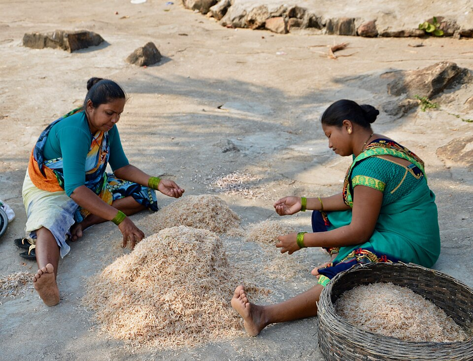

The Uncounted Hours: How India’s Care Work Falls on Women
What does India's Time-Use Survey tells about women's time and how it is spent

Source: Wikimedia Commons
Everyday across the country, women trade their time for the functioning of a household in a way that often goes unnoticed. India’s Time Use Survey data, puts numbers to this truth that we already know: the country’s unpaid labor economy runs on the time women sacrifice, and the numbers barely ever move.
The 3-hour gap hiding in the numbers
If you look at most daily activities, men and women spend about the same time on them. Learning: 415 for men, 413 for women. Socializing: 138 vs 139. Self-care: 710 vs 709. Fairly equal.
But take a look at “unpaid domestic work” such as cooking, cleaning, housework, and that is where the picture cracks wide open. Women spend 289 minutes a day on it, while men spend only 88. That is a 201 minute gap, more than three hours in a single category. And if you add “unpaid caregiving services” such as looking after children and the elderly, women log 137 minutes against men’s 75.
The pattern is evident. Wherever the activities are learning, leisure, or self maintenance, the genders converge. Wherever the activity is care work, they diverge drastically. Unpaid work in India is not evenly distributed, it is specifically the domestic chores and caregiving work that is assigned to women while the rest is shared roughly equally.
Five years later, almost nothing has changed
If this gap were slowly changing, we’d expect the numbers to shift over time. They haven’t, really.
From 2019 to 2024, women’s time spent on domestic work dropped only slightly, from about 298 minutes to 289. Caregiving actually went up a little, from 133 to 137 minutes.
Five years passed, a pandemic happened. More women joined the workforce. But the amount of unpaid housework and caregiving women do has barely moved. Whatever is changing in India, it isn't changing who does the chores.
No simple pattern across states
You might expect richer or more “modern” states to have smaller gaps. They don’t. The gender gap in unpaid work ranges from 177 to 309 minutes depending on the state, and the biggest gaps show up in places like Jammu and Kashmir and Arunachal Pradesh, not in a clear rich vs poor or south vs north pattern.
This tells us the gap isn't just about money or infrastructure but it is shaped by local social norms about what women are widely expected to do. This means it is a problem difficult to fix with one single policy for the whole country.
Rural women do more unpaid labour in some states, urban women in others
The rural-urban divide is not uniform amongst the states. In Delhi, women in rural areas spend 66 minutes more everyday on unpaid labour as compared to the urban population. However, the pattern reverses in states like Nagaland, where urban women spend 38 minutes more than rural women, and Sikkim, with the urban figure being 30 minutes more.
In states like Himachal Pradesh, Meghalaya, Odisha and West Bengal, rural women spend significantly more time on unpaid labour. This variation suggests factors such as employment opportunities, household infrastructure, and other social circumstances could be responsible for this disparity.
The unpaid hours India shares with the world
India records 170 minutes of unpaid work a day in comparison to some other countries as shown. The figures show that unpaid work takes up a significant amount of time across countries, although the amount varies considerably.
In India, this time adds another dimension to the unpaid-work gender gap, where women spend substantially more time on unpaid domestic and caregiving activities than men.
India’s position in the globe of spending time in unpaid labour
The graphic has three scatter plots showing where Deepti Sharma stands compared to other bowlers in Tests, ODIs and T20Is. All players are shown using yellow dots while Deepti Sharma is shown using a red dot.
The gendered burden of unpaid work
As per the 2024 data issued by the Ministry of Statistics and Program Implementation (MoSPI), the difference between unpaid labour done by men and women is stark.
Women account for 21.3% of the unpaid labour, while men account for 3.9% only.
Thus, the share of unpaid work among women is more than five times that of men.
These figures highlight how it is more likely that domestic and caregiving responsibilities are carried out by women. Furthermore, for many women, they perform such unpaid work alongside their paid work, creating double the burden.